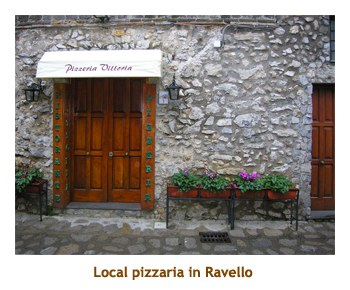

[ Home ] [ Travel ] [ Photography ] [ Pets ] [ Games] [ Rowing] [ Physics ]


Cruising on the Celebrity Equinox
Travel
Cruises
Past Cruises (Diaries)
Future Cruises
Rogues Galleries
Land Trips
Diaries (Land Trips)
Hawai'i - Big Island - 04'01
Hawai'i - Maui - 05'02
Hawai'i - Big Island - 04'03
Hawai'i - Kaua'i - 09'04
Hawai'i - Big Island - 04'06
Hawai'i - Maui - 04'06
Mainland China - 05'07
Phoenix, Arizona - 12'07
Greek Isles - 05'08
Hawai'i - Kaua'i - 09'08
Hawai'i - Big Island - 09'09
Hawai'i - Maui - 05'12
Hawai'i - Big Island - 04'13
Ireland - 08'13
Mexico - Cancun 11'13
France/Belgium/Lux 07'15
Hawai'i - Big Island - 05'17
England / Wales - 06'17
Hawai'i - Big Island - 09'19
Photography
Cameras
Underwater
Pets
Tara
Blackie
Whitey
Muffy
Ollie
Rusty
Fluffy
Rufus&Dufus
Games
Rowing
Physics
Rating (out of 5): Ship  Food
Service
Itinerary
Food
Service
Itinerary
We booked this trip on the Celebrity Equinox about a year and a half before the sail date. We were interested in trying the new ship, and the itinerary included mostly places we hadn't been to before. Especially intriguing were Israel and Egypt. I was so interested in Egypt that I signed up for a course at the U of Calgary in the Spring about Egyptian hieroglyphics and religion. I wanted to be prepared!
The Equinox is identical to the Solstice, which we had done earlier in the year in the Caribbean. We just loved the Solstice, so were eager to see the Equinox. We weren't disappointed.
Day 1,2 (Oct 19,20) - Travel to Rome
We were fortunate to get an afternoon flight to Rome - no early morning start! We dropped Fluffy off at the cat kennel at 9:00 AM. Then we finished our packing and waited for the airport shuttle. It came at 11:00 AM. There was another pickup on the way, so we got to the airport just before noon. We checked in and had a short wait for our 1:00 PM flight to Toronto. At Toronto, we met our cruising buddies Barry and Heather from Hamilton. We had cruised with them twice before. We had another short wait and were off to Rome by 8:30 PM. The plane was a 767 and only about 1/3 full. Marjorie was able to grab the 3 middle seats next to us, and I had the window/aisle combo. It was great having all the extra room. Still, neither of us really slept much on the trip.
We arrived in Rome about 8.5 hours later, just before noon. We had an email from the hotel that we were booked on their complimentary airport shuttle and to phone for instructions when we arrived. Marj did so and was told that we weren't booked for a shuttle! We ended up getting a ride on a generic airport shuttle right to our hotel. It was 15 Euro each, but was worth it. When we arrived at the hotel and showed the email, the hotel gave a feeble excuse about us maybe being late for the 12 PM shuttle. Yeah, right!
The other problem we had was that there are 3 Alimandi hotels within a couple of
blocks, all at different addresses.
The airport shuttle dropped us off at the one where we had booked (3 star), but the hotel had
"upgraded" us to the unit a block away (4 star). Now we would have to get hold of the
shuttle company we had booked for the transfer to Civitavecchia and let them know of our
address change. Lots of fun!
We checked into the hotel by about 1:30 and spent rest of the afternoon wandering around the Vatican area (and the Castel Sant'Angelo monument). It was blue sky and warm, so I wore my shorts. I was the only one I saw in shorts, with most people bundled in sweaters and jackets. Roman wimps! Our hotel was right across the street from the Vatican Museum entrance, so it was very convenient. We wandered around the large plaza in front of St.Peter's Basilica. It was relatively crowded with tourists.Then we walked beside the Pope "escape tunnel" to the Castel Sant'Angelo museum. This building was originally built as a mausaleum for the emperor Hadrian, but had been modified trhough the centuries and served as a prison for a while. There were lots of street vendors selling purses and other things.
On our way back to the hotel we stopped at a couple of "fast food" pizza places
for pizza and gelato. A great way to start an Italian holiday! We were back at the hotel
at 6:30 trying to stay awake so that we could attempt a normal night's sleep (although we
had
been up for 2 days!). We lasted to 7:30 and then had to crash. So, we both woke up at 11:30 PM
thinking it was morning. No such luck. I got up and did my diary, then went back to bed
around 2:30 AM. I went to sleep again which was good as we had an early start for the next day.
Day 3 (Oct 21) - First Full Day in Rome
It was a beautiful sunny day. We both went back to bed at 2:30 AM, but still woke up at 6:00. Breakfast opened at 7:30 AM, so we had to wait an hour or so before we could eat. Breakfast was included at the room rate. It was a pretty good variety and was a good start to the day. We had prebooked a Vatican Museum / Sistine Chapel tour through Viator Tours. We were to meet at 9:30 at the steps just across from the Vatican Museum entrance. Well, by fluke, our hotel was right beside the steps. We just walked out the door of the hotel and there was our tour group! We did a 3.5 hour tour through the various rooms (palaces) and hallways and courtyards all stuffed with paintings, sculptures and tapesteries. The complex is made up of numerous papal palaces, all linked together. It was amazing (and huge). The highlight were the Rafael rooms and the Sistine Chapel (Michelangelo). The guide was very good and we certainly learned a lot (mostly now forgotten). In one of the Vatican courtyards, there was a "broken sphere" sculpture by Pomodoro. Earlier this year we had seen another of his spheres at Trinity College in Dublin. I still had the photo of the Dublin sphere on our camera, so I showed it to the guide. She was surprised!
After the tour we returned to the hotel to pick up our backpack. We headed out for an afternoon
on our own. We stopped at a nearby restaurant where I had shrimp scampi and Marj had lasagne.
Then it was time to start our cathedral tour. I had looked up some interesting cathedrals and we
were going to attempt to visit 3 of them.
We had decided to do all our travel by subway. We entered the nearest metro station and bought an all-day pass (4 Euros). We travelled across the Tiber river and over to Republica Square station. From there we walked to Santa Maria Maggiore Cathedral, founded in the 4th century AD. It was enormous and full of wonderful paintings and sculptures. All the cathedrals here are marvelous. Then we walked back to the Termini station and continued down to the Colleseum station. We walked to San Clemente Cathedral. This is a smallish 12th century cathedral built on top if a 4th century cathedral which in turn was built on top of a 1st century Roman village. We went down steps under the cathdral to the earlier cathedral, and then down more steps to the roman village. All levels were intact and it was very interesting.
We then walked over to San
Giavonni in Laterno, another huge cathedral. I had picked these three
cathedrals from a book I have on Roman architecture and they were all
really worth a visit. By this time it was after 6:00 PM and we had had enough
walking for one day. We subbed it back to the Octaviano station (closest
to our hotel). Walking back to the hotel we stopped at a kebab place for
dins. It was after 7:00 by this time so we just watched some TV, read and
then packed it in for the night.
Day 4 (Oct 22) - Second Full Day in Rome
It rained overnight and was supposed to rain all day.
We couldn't complain though as we had had
two beautiful days already. We had linked up with some other cruisers (6 of us) on Cruise Critic
and booked a private tour for the day. We had to hop on the subway over to Republica Square
and meet the others at a hotel on Via Modena at 9:00 AM.
We left extra early so we would have plenty of time (at least a half hour) to find
the hotel in case we got lost. Although the hotel was only 1.5 blocks from the train
station, we got lost! We had the
address and asked a number of people (including a military guy and a bus driver) where we
should go and got various answers, none of which lead us to our destination. Two
people even said they had never heard of the street. Our map didn't
have all the streets on it, so that didn't help either. On our wanderings we were stopped by some
military guys and out from a gate came some soldiers on horseback, looking just like the
Buckingham Palace guard. Cool! I finally sorted the map out and we arrived at the hotel exactly
at 9:00.
Our wandering must have taken us about the full half hour. Anyway, the other
folks were there waiting and we boarded a minivan. We drove about 20 miles
east of the city to a village called Tivoli,
where the Villa
d'Este and Hadrian's
Villa were situated. Our first stop was at the Villa d'Este. This
is a huge mansion and gardens with hundreds of fountains that was built
in 1551 by a Cardinal who received the land as a consolation for not becoming
the Pope. We walked through the building and gardens. Dispite the rain
it was very nice. Just to make things more wet, there were fountains everywhere.
Apart from a fountain near the top of the slope, all of the fountains
were powered by gravity. The water was diverted from a nearby river. One
of the founatins was called the "organ" fountain and actually played music
on the hour. We just missed the timing, so didn't get to hear it. After
an hour or so of wandering the gardens we met back at the minivan for
our next destination.

We were scheduled to visit the nearby summer villa built by the Emperor Hadrian. However, it was raining hard and the guide didn't think it would be worthwhile in the rain. So, we skipped the tour of Hadrian's Villa and returned to Rome. We got back about 1:00 PM and the group went to a nearby restaurant for lunch. I had gnocchi, and Marj had an egg and artichoke pizza. After lunch we said goodbye to our tour mates and metro'ed it back to the hotel. The rain had stopped by now so we headed over to the Vatican to visit St. Peter's Basilica. There was a long lineup to get in, but we had nothing else pressing so joined the line. It was probably ony about 1/2 hour wait and then we toured through the basilica. We had toured it the last time we were in Rome (2006), but enjoyed the second time through. It really is an amazing church.
Then we returned back to the hotel around
6:30 or so. After resting a bit, we popped over to the local grocery store to get some supplies
for the cruise - Coke, beer, juice, chocolate basr, snackies.
It is always fun shopping when you can't understand the
labels and people speak Italian! The largest package of Coke I could find was a 6 pack.
We've noticed this all over Europe that no one stocks 12 or 24 can packages. The beer came in
2 packs, so I got some Peroni and some Moretti. Now we were set for the cruise.
Day 5 (Oct 23) - Boarding in Civitavecchia
Today was transfer day. Our pickup time for the shuttle to the cruise dock was for 10:40 AM. So, we slept in a bit and had a leisurely breakfast. Then we did a walk down the street looking for an ATM. We needed some Euros for the upcoming excursions. We checked out from the hotel just as the shuttle had arrived. I had prebooked a shuttle for 6 people a couple of months ago, and got 4 other passengers from Cruise Critic. One of the couples was from North Vancouver.
Aside: When Marj originally booked the hotel, the web said 160 Euros. They booked us at 175. Marj complained and they sent an email stating our price would be 160. When we arrived at the hotel (a 3 star) they had rebooked us into their 4 star hotel (a block away) as they were overbooked in the 3 star. They said there would be no upgrade charge as they were moving us at their discretion. Fair enough! However, when we checked out, they charged 175. When we showed them the email that stated 160, they reminded us that we were upgraded ... Rather than fight it we just paid the 175 (times 3 nights!)
The trip to Civitevecchia was about 1.5 hours. It was still cloudy, but we had a bit of sun along the way.
We got to the cruise port right at noon. There were already lots of passengers checking in.
Checkin went very quick and we were onboard the ship by 12:15. We dumped our carryon in our
cabin and headed up to lunch.The ship is identical to the Solstice, which we did in February. So,
we had no problem finding our way around. We saw some familiar crew faces around the ship as
many of them had trained on the Solstice and then moved to the Equinox in August. We even ran
into Carl, the Corning Glass Museum guy, who we had had lunch with on the Solstice. He said he
remembered us. We're really looking forward to seeing some more glass blowing.
Lunch was
great - they have the same sandwich bar as the Solstice - I had egg salad!
After lunch we toured around the ship, then visited the library to pick up some books to read.
We read for a bit and it was time for life boat drill (at 5:00). The drill no longer requires life jackets. We
just sat in the theatre and watched a safety movie. Then it was time to get ready for our first dinner.
We had early seating. Celebrity came out with "select" dining (anytime) a couple of months before
the cruise, but we opted to stay as fixed seating.
Our Ontario friends (Barry and Heather) had arranged a table for 8 with another
couple from Vancouver (Dave and Louise) and a couple from Florida
(Ron and Beverly). The group seemed very compatible, so we
should have some great dinners together. Early dinner is at 6:15 (late!) and we didn't finish until
almost 8:30. We decided not to do the entertainment (which was at 9:30), so just wandered the
decks. We went to bed about 10:00 and actually slept through until 7:00 AM.
Day 6 (Oct 24) - Day at Sea
Today was a day at sea. We woke up to cloud and rain, and it was that way throughtout the day. It was cool, too. We had breakfast at 7:00 (there was no one there!) and then wandered around a bit. I visited the gym for a workout while Marj read her book. After a cool down period (and some Corner Gas), we went to the Cruise Critic "meet and greet" at 10:40. There were mobs of people there. We met some old friends, some virtual friends and others that we hadn't met before. It was nice finally meeting those folks that we had booked excursions with and chatted for a year or so on the Web. Lunch was in the buffet. I had my usual egg salad sandwich. Great!
After lunch we browsed the ship a bit more and then did some reading. At 4 PM (every day) there
is an open bar for Elite members in the Sky Lounge. We wandered up there but didn't see anyone
we knew. This is a new perk in the Celebrity loyalty program. This competes with the free minibar
setup offered by Princess. Then we headed back to our cabin to get ready for formal night. It was
rack of lamb night! After dinner we headed to the show in the theatre. It was a Cirque de Soleil type
show with lots of high wire and acrobatics. Excellent! We had seen a similar show on the Solstice.
Then, we were off to bed.
Day 7 (Oct 25) - Corinth (Piraeus)
Today was our first port stop - in Pireaus, Greece. We had done lots of Athens last year, so had joined a private group to visit Corinth and Mycenae. We had done Mycenae before, but not Corinth. It was another cloudy, rainy, cool day. We were not used to this weather in Greece! We docked about 10 AM and headed off the ship with our group of 12 passengers. Our planned itinerary was the Corinth Canal, ancient Corinth, Mycenae and then Menea. However, due to the torrential rain and thunderstorms, we weren't sure how far we would get.
Corinth was about an hour out of Athens. We passed over a bridge over the canal and
stopped just at the end of the bridge (at a restaurant and souvenir shop).
It was a narrow bridge with sidewalks on either side.
The near sidewalk was impossible as the roadway had several inches of water and every
car sprayed the sidewalk with gallons of water. So, we crossed the road and walked out the
dryer sidewalk. We took some photos looking down the canal. The narrow gorge was 90 metes
high, so boats would not see anything but walls. Unfortunately there were no boats when we
were there. Then we headed a few miles away
to the site of ancient Corinth (Greek, then Roman).
We did the museum and then part of the grounds. It rained hard at times, so we didn't do
the whole site.
Heading towards Mycenae, we stopped at a roadside cafe and had some pizza for lunch. Then we continued on to Mycenae. We had done this last year in the sunshine, so Marj decided not to join the trek through the site. I did and it was interesting, even though we didn't do the whole site and it rained most of the time. Our tickets included an entrance to the burial mound down the road, so as we only had purchased one ticket, Marj got to go to the "Tholos", also known as the Treasury of Atreus. However, the security lady at the entrance felt sorry for me and eventually waved me through to join the rest of the group.
Due to the weather and traffic, we decided to skip Menea and head back to the ship.
Even so, we weren't back until 5 PM. It was an interesting but very wet day. It was nice
to be back in our warm and dry cabin! For dinner I had a tasty steak (New York, maybe?).
Afterwards Marj headed back to the cabin but I went to the entertainment. It was a
singer / trumper player. I didn't care for him, but he was a real live wire and the crowd
loved him. He got a standing ovation.
Day 8 (Oct 26) - Rhodes, Greece
Today was our stop at the island of Rhodes. Rhodes is probably most noted as the headquarters of the crusaders during the 4th Crusade. We woke up to another forecast of heavy rains and thunderstorms.That's 5 rainy days in a row! The weather was definitely following us as our guides in both Athens and Rhodes claimed the day before was wonderful. In fact, Rhodes boasts 300 days of sunshine a year, and we had to get the rainy day! Oh well, I'm sure we're just paying for the previous 8 years of sunny cruising that we have enjoyed in the past!
Once again
the ship had a late docking at 10 AM. Our tour for the day was organized by our good friend
Glenys from Sydney. She had booked 4 cabs (4 pax each) to drive us through the old town
and then to the hilltop fortress of Lindos (almost an hour away). We did some rainy stops
in the old town for "the view". It's amazing the difference between scenery and architecture
against a bright blur sky amd the dreary look of cloud and rain. It really is a beautiful island,
but you just have to imagine how it would look in the sunshine. Our first stop was at the
dockside Church of the Annunciation (built in 1929). The highlight stop was at the Palace
of the Grand Master, built in the 1300's. It is a huge fortress now traversed by traffic.
Then we headed south down the west coast.
Along the coast we stopped at a gold jewellery factory. No one was really interested, so we didn't stop long. When we got to Lindos it was pouring with lots of thunder and lightening. We were let off in the small village at the foot of the hill. I joined a small group who braved the 250 steps up to the fortress, with rivers of water running down the path. We really couldn't appreciate the ancient structure in this weather, and the views of the ocean and beaches were bleak and dreary. While I was up the hill, Marj rambled around the village, including a stop at the Church of Panagia. This church was build about the year 1500. After a stop of about 1.5 hours, we jumped back in the taxis and headed back to the ship. Along the way we stopped at a ceramics factory and the sun peeked out!
We got back to the ship about 3:00 PM. I headed to the gym and Marj wandered. Elite
members have an open bar from 4 to 6 (I think
I mentioned this before). Other than a brief visit 2 days ago, we haven't
used it yet. Free booze and we're letting it pass? Dinner was great. I had
the osso bucco. Very good! The entertainment was a variety show, but very late (9:15),
so we didn't attend. Instead we went to the hot glass show. Oops, it was raining - no show.
Day 9 (Oct 27) - Kusadasi, Turkey
We woke up today to sunshine! We were back to beautiful Turkey. Kusadasi is a sea
port and vacation spot. We had booked a private tour to Ephesus and Sirence through
Glenys and Alan. It was also our first early excursion. Our previous dockings were at 10 AM,
today our excursion left at 8 AM. We had an early breakfast and then headed out to meet up
with the tour. Marj and I were the first ones out, so I was talking to our guide from Ekol Tours.
I mentioned that our guide three years ago was Bekir,
also from Ekol. Our guide pointed to the fellow
next to him and asked me if he looked familiar. It was Bekir! What a coincidence. We boarded
a 24 pax van (there were 16 of us) and headed off to Ephesus. I asked the guide if we could
stop at the ocean overlook on the way (ie. in the morning sun)
as the lighting would be better on the ship (the usual
stop is at the end of the day when the sun is behind the ship). So we got some pictures
of the ship in perfect lighting. We arrived at Ephesus about 1/2 hour later. It was nice to see
the ruins again although it was a first time for Marjorie as she was sick the last time we visited.
This time we did the terrace houses which we had skipped last time.The weather was
great. Not a cloud in the sky, but not too hot either. There were crowds of people at the site,
but it is very large. Difficult to get pictures without people in them. We even caught a gladiator
show on the ancient street.
After Ephesus, we headed to the village of Sirince (shi-RIN-ja). It is a hillside town with narrow cobbled pathways (no traffic!). It used to be a Greek town, but was resettled by Turks when the mass migrations happened in the 1920's. There were lots of souvenir shops, handicrafts and wine / olive oil shops. We wandered up and down the alleyways and visited an old church (St. John the Baptist) under reconstruction. Marjorie bought a bottle of "Simza" olive oil. Back on the bus, we stopped at a leather factory and outlet. I don't think the stop had been requested as part of the tour, but we spent over an hour there. They even did a "runway" show for us. It was interesting (for 10 minutes or so), but we had to wait for the one couple who actually bought a coat.
We were driven back to town and
dropped off in downtown Kusadasi. We found a ceramics shop and bought an Ottoman
scene on two ceramic tiles. Then it was back onto the ship and a quick workout in the gym.
For dinner I had the braised short ribs. Once again very good! The entertainment was song
and dance, so we went to the hot glass show instead. Once again we didn't win anything.
Day 10 (Oct 28) - Day at Sea
Today was a day at sea. We arose to rain! Big surprise! The rain was accompanied by much thunder and lightening. I was up at 6:00, so I headed right up to the gym while Marj rested. There were lots of people in the gym, even at so early a time. When I got back to the room, Marj was gone, so I watched some Corner Gas. Marj returned and we did breakfast.
It was time to do our free laundry, so I packed a bag of dirty stuff and left it for the room steward. Being Elite, we get two free bags (max 30 items) of laundry for the cruise. We didn't do much after that bit of excitement, just wandered and then attended a lecture on the Pharaohs of Egypt. It was OK. We had lunch and then popped into the Captain's Club officers' party. Then we read for most of the afternoon. It was formal night, so I had to don my suit and tie. For dinner I had the lamb chops. We skipped the entertainment and checked in early as we had a 7:00 AM start the next day.
Oh yes, about "Team Earth". This is a room on Deck 7
where Celebrity has interactive TV screens
that allow you to see all the wonderful things that they are doing to help the environment.
Kind of interesting, but you never see anyone there. Not a big draw!
Day 11 (Oct 29) - Haifa, Israel
We woke early (5 AM) to a sunny, warm morning. We were finally in Israel. We headed up for breakfast and then watched the docking in Haifa. We could see the beautiful Ba'hai temple and gardens on the slopes of Mt Carmel. We had decided to do ship's tours in Israel due to (probably unwarranted) safety concerns. We met at 7:00 for the tour and boarded the bus to Galilee. As we drove through the city, all the signage was in Hebrew. Unlike Europe, there was very little English in sight. We even passed a McDonalds that had the golden arches, but the name was in Hebrew. Most of the signage was in Arabic as well. Arabic is a second language in Israel, so most of the signs contain Hebrew and Arabic.
A short distance out of Haifa we were following a tandem dump truck and the driver
did an illegal pass using a left turn lane. Just our luck, we were
pulled over by an Israeli police woman. That was fun! Dispite a lot of pleading, the driver
ended up getting a ticket.
The countryside was quite hilly and barren except for where there was irrigation. We passed by a number of Arab towns. It was easy to pick out the Arab versus Israeli towns by the architecture. I wasn't aware of the large number of Arabs in Israel (20% of the population). Actually I shouldn't call them Arabs as they are Israeli - just like French Canadians are Canadian and Afro Americans are American. Their heritage is Arabic, but they are Israeli citizens.
Suddenly we travelled over a hill and there
was the Sea of Galilee! It was quite hazy and difficult to make out the far shore, but
it was smaller than I had imagined it. Our first stop was at the Church of
the Mount of the Beatitudes. It was quite
warm by then, reaching 31C. The church and nearby monastery were very interesting.
A Korean tour group (or some Asian nationality) we doing a service in the
church and singing some hymns.
Then we drove to the nearby village of Tabgha to see the
Church of the Multiplication (where 2 fishes and 5 loaves fed the multitudes). There
was a rock beneath a table marking the exact spot where Christ gave his sermon.
Then it was off to Capernaum (also nearby) to see the ancient Synagog where
Christ preached. We also saw the ruins of the house of St. Peter. A number of
the 12 apostles were from Capernaum.

Then we headed off north along the shore of the Sea of Galilee in a clockwise
direction, passing through the Golan Heights. It was obvious the military advantage
of attacking Israel from
the heights, so it's no wonder Israel annexed this area, At the south end of the sea, we
stopped at the River Jordan to see where St. John the Baptist did his thing. There
was a large souvenir shop there and I bought a decorative tile. At this
point it had clouded over and started to rain. The temperature dropped quickly to
about 20C. We headed up the west shore of the sea to a kibutz
just past Tiberias for lunch (Ginosar).
The lunch was a buffet in a huge restaurant (seating hundreds) and was quite good.
After lunch we left the sea and headed west to the city of Nazareth. Along the
way the rain stopped and it cleared up a bit. We did a drive
through of the city
and then stopped at the Church of the Annunciation. The church was huge. It is the
largest Christian church in the Middle East. By now it was 5:00 PM and getting dark.
We drove back to Haifa (about 1 hour) and arrived back at the ship at about 6:00 PM.
Just in time to change clothes and go to dinner. We were missing Dave and Louise as
they were overnighting in Jerusalem on a private tour. After dinner we once again
skipped the entertainment (Brooks Aron who we had seen before) as we had a very
early morning ahead.
Day 12 (Oct 30) - Ashdod, Israel
Once again awoke to a sunny morning. It was supposed to be 25C today. At 8:00 we boarded the bus and headed across the countryside to Bethlehem. It was about a one hour drive the Jerusalem. Once there, we went through southern Jerusalem and through a wall (built in 2003) into the Palestinian area (part of the West Bank). Bethlehem is in the Arab section. If I had realized this when booking the tour, I might have thought twice about going. However, I wasn't aware of this until we actually reached the wall. Our Israeli guide had to leave the bus on the Israeli side and we picked up a Palestinian guide for the arab area.
The first difference I noticed after entering the West Bank was that the signage was
in Arabic, with lots of English. There was no trace of any Hebrew. The architecture
was not all that different than Israeli Jerusalem, but this was because the Bethlehem
area was originally Christian, and it is only recently that Muslims have grown to
outnumber the Christians.

We stopped first at a souvenir store for almost an hour! The guide claimed that the church wasn't open yet, so we waited at the shop. Then it was off to the Church of the Nativity - built on the site where Christ was supposedly born. The location was a cave rather than a stable. The church was very large, and there were actually several churches of different denominations connected together. We had to enter a grotto to see the supposed (and contested) location of the birth. Actually, there are two grottos one of which is officially the site of the birth. There was a 2 hour lineup to get in, so we opted to see the other grotto which had no lineup. As the guide pointed out, no one really knew the exact spot and the second grotto was just as likely. As the story of the birth was written a century or more later, the exact spot is highly speculative (if even in Bethlem at all!). We visited several churches of differing denominations all of which were very interesting..
Leaving
the church(es), we drove back to the wall, changed guides and entered the Israeli
section. We stopped for a buffet lunch in a large multi-story
building that was empty except for the
dining area. By this time it had clouded over and was raining (dropping to 11C
degrees!).
After lunch we drove to the town center. There we walked into a large plaza
overlooking the Wailing Wall. I put on a cardboard Yamulka and joined the
Hasidic Jews writhing at the wall. Very strange! Then we walked through some
narrow streets and followed the Via Dolorosa (the path of Jesus
carrying the cross). This path
travelled through a large shopping bazaar and was very commercial. With the
crowds, the shops and the rain it was difficult to make sense of the various
"stations of the cross". At the top we entered the Church of the Holy Sepulchure
that contained the locations of the crucifiction and the burial tomb. The exact locations
as marked are highly subjective, but I guess it's meaningful to some anyway.
By this time it was almost 5:00 PM and time to head back to the ship. On the way
back we stopped at a location overlooking the Gardens of Gethsemone. We
arrived at the ship just after 6:00, and sailed at 7:00. Once again we skipped the
entertainment as we were tired and had an early start for our Egypt tour.
Day 13 (Oct 31) - Luxor, Egypt (Day 1)
We had a late docking today in Alexandria at 10 AM. This was good though as we had to pack and get ready for our overnight trip to Luxor and Cairo.It was forecast for sun and hot - no rain! We left the ship at 10:00 and got onto the bus. There were about 35 of us on the bus. Our tour guide walked down the aisle asking each of us our names. Then she walked back up the aisle addressing each of us by name! For the rest of the 2 days she always talked to us by name. Amazing! We left the port and drove through the streets of Alexandria. What a different way of life. We saw people in arab costume, crumbling buildings (at least they appeared that way) and very dirty streets with garbage. Mixed in with the cars and trucks on the roads were carts and wagons pulled by donkeys. Yes, we were in Africa! We soon arrived at the airport. There, we caught a flight to Luxor (about 1.5 hours away).
Arriving in Luxor, we immediately bused to the Valley of the Kings.
At the famous valley we got a lecture
from the tour gide and then were given tickets to visit 3 tombs. There are 64 tombs
in total - some being actively excavated, some open for the public and some
temporarily closed. Our ticket allowed us to chose any three of the open tombs.
Our guide recommended Rameses III, Rameses IX and Horemheb, so we went
with her suggestion. The tombs were way underground and we expected it to be
cool there, but it was actually hotter and more humid. The tomb walls were
painted with pharaohs and deities, plus lots of hieroglyphics. And, yes, my
hieroglyphics course turned out to be well worthwhile as I recognized many of
the symbols and words, especially the cartouches of the pharaohs and
the deities. Woohoo! After visiting the 3 tombs, we
gathered back on the bus and headed to our hotel to check in and have dinner,
stopping along the way at the Colossi of Memnon (statues of Amenhotep III) for photos.
Dinner was a buffet and quite good.
After dinner (around 7 PM, after dark) we reboarded the bus and drove
to the Luxor Temple which was all lighted up. What an amazing site! The
columns and structures were huge. Even though it is much older, it really
outdid any of the Roman or Greek temples that we have seen in the past.
There were spotlights everywhere, so the temple was really lit up. We
walked around the site for about an hour and then headed back to the
hotel. We were back by about 9 PM and told that we would be getting
a 5 AM wakeup call. The hotel was a five star and was gorgeous. Our
room had a large balcony overlooking the Nile River. We stayed on
the balcony for a while enjoying the warm air and the lights on the river.
There was a large platform on the bank of the river where a dancing
show was being performed. What a lovely evening!
Day 14 (Nov 1) - Cairo, Egypt (Day 2)
Up at 5:00, breakfast at 5:30 this morning. Such a beautiful hotel, but we arrived and left in the dark! We checked out, boarded the bus and headed to the Karnak Temple as full daylight came upon us. This temple was even larger and more amazing than the Luxor Temple. We spent an hour or so tramping around the temple site before gathering back at the bus. Then we headed to the airport for our 10 AM flight to Cairo (about 1 hour away). At Cairo we boarded a bus and drove out to see the pyramids of Giza. Along the way we travelled through the residential area of town (15 to 20 million people) and it was again a dirty crumbling ghetto. Part of the way was along a canal where everyone threw their garbage. I even noticed a dead mule on the bank. One vacant lot looked like a landfill site and right next to it was a small sidewalk cafe. Phew! I wouldn't want to eat there!
Before we had left the residential
area we could see the pyramids. Cairo (actually Giza) has expanded right
up to the pyramids. We stopped at an area where we had a good view of the
three large pyramids. It was quite hazy and the wind whipped up a real
sandstorm at times. There were numerous hawkers there, including a
number offering camel rides. What a zoo! The pyramids were very interesting,
though paled in impact to the temples of Luxor. The bus moved us to three
stops around the pyramids, the last being at the famous sphinx.
After walking around the pyramids and the sphinx, we drove to the Meridian Hotel for a late buffet lunch. Then we drove to the "Papyrus Institue" shopping mall. There we picked up Polo shirts we had ordered the day before with our names written as a hieroglyphic cartouche. The shop was interesting and the papyrus paintings were beautiful but very expensive ($100's +++). Then we edged through traffic to the National Museum. We stayed there from 5:00 to 6:30. The highlight was the Tutankhamen collection, but there were many other interesting items there as well. Unfortunately, many of the real treasures were looted from the Egyptians in the 1800's by Britain, France and Germany for their museums. It boggles my mind after seeing Tut's exhibit (a very minor pharaoh) of how many museums it would take if all 64 of the tombs in the Valley of the Kings were intact!
Then it was time to head back to the ship. We had a three hour
bumpy bus
ride and reached the ship after 9:30 PM. Our sechduled departure
was 10 PM, but 66 people were still missing from the ship. We popped
into the buffet for a very late dinner. Sometime after 10:00 we finally moved
from the dock. It had been a busy 4 days in Israel and Egypt and we were
looking forward to the next two "at sea" days.
Day 15,16 (Nov 2,3) - Two Days at Sea
So, after a busy 4 days, we finally had a sea day break. In fact, we
were up for two sea days. The rythm was the same in the morning - up early,
off to the gym, CornerGas cooldown then to Michael's Club for a smoothie
or hot chocolate. The Michael's Club thingy was another Elite perk from
8:00 to 10:00 each morning. Then to the buffet for a real breakfast. After
breakfast we headed up to the Hot Glass Show. And, Marj actually WON!!!
The piece was a floppy bowl shape, made by G Brian. Just a note on
G Brian: we were talking to him and I mentioned being on the Solstice
in February where the guest artists were Alex and Brenna. Turns out that
Brenna is his fiance! What a coincidence! Anyway, our challenge now
was to get this huge glass thing home. More on that later.
We really did enjoy the hot glass sessions that we attended. The artists are really gifted and make it look so easy. The two artists on this cruise were a couple of clowns, too, and their continuous banter was sometimes quite funny. But they were also very informative when they needed to be.
Of course, we had to do lunch in the buffet each day. For some reason, we never did do the formal dining room for lunch. Too busy I guess. As usual, I had my favourite egg salad and shredded lettuce in a fresh wholewheat bun.
On the first of our 2 sea days we attended an afternoon classical piano concert with Brooks Aron. It was excellent. We had seen him play several years ago on the Constellation in the Baltics and just loved him then, too. On the second day we did a lecture on sea legends. It was pretty good, but I found the lecturer to be a bit of a drone (ie. I was sleepy). We had our final formal night and took pictures of our table mates all dressed up. The menu choice was lobster! After dinner we wandered through the "end of cruise" junk sale but didn't buy anything. Neither night had entertainment that interested us so we just did our own thing. Also, we had to finish up those library books as we wouldn't have any more time for reading. The library was well stocked with books and I had managed to scoop 2 new Dean Koontz books.
Oh yes, we also submitted our second laundry bag in time to get our clothes back on
the last full day of the cruise. We needed some clean clothes for Naples,
and for our short stay in Rome.
Day 17 (Nov 4) - Naples, Italy
We pulled in to Naples about 6:00 AM and caught the city in the morning sunlight. It was almost completely clear, but the forecast was for heavy cloud. Sure enough, in no time at all clouds started rolling in. This was our second time to the Amalfi coast, and it looked like we were destined to never see it in the sunshine. Sigh! We had an early breakfast and then disembarked the ship to meet our tour guide at 7:00. This tour was set up by Glenys and Alan and there were 8 of us in the van. We've always had great tour guides, but I didn't care for this fellow. The sound system in the van was really poor and Marj and I (in the rear seat) couldn't hear him at times. He also mumbled and spoke with quite an accent. Worst of all he had an attitude that I didn't care for. Enough said.
We drove south along the coast through the city of Naples. Then we came to an
agricultural suburb where the best pasta flour was made (so they say). we travelled (quietly)
past Mount Vesuvius, careful not to disturb it.. By this time it was very cloudy and dark -
not what we wanted!
The first stop we made was at an overlook of the town of Sorrento. I think we stopped at exactly the same spot last time. Anyway, this time we proceeded down and into the town (last time we bypassed it). We stopped at the Church of St. Francis near the waterfront. It was a beautiful church. Then we headed a short distance to a shop that dealt mainly in inlaid wood. They had desks, tables, cabinets, etc and done in gorgeous inlaid wood designs. The prices were all in the 1,000's of Euros - a bit much for my budget. Marjorie figured that the shop would use bubble wrap to ship items, so asked if she could have some for her "hot glass" winning. So, Marj left the inlaid wood shop carrying a large roll of bubble wrap! And it was free! After a stop of about 1/2 hour, we headed out on the windy coastal higway again.
We eventually came upon our first coastal village - Positano. The van could take us about
halfway down the mountain into the village, but then we had to get out to walk the rest of
the way down to the beach. The narrow lanes were lined with souvenir and ceramics shops.
We diverted from the main path and visited a large cathedral - Santa Maria Assunta. These
churches are squeezed into the surrounding buildings and don't look so big from
the outside. However, when you get inside they are huge. We wandered right down to the
beach and then headed back up, browsing in some shops along the way. We spent
about 1 hour touring the village and then headed back to the highway again.

Continuing along we passed the village of Praiano, but we didn't stop for a tour. We stopped a little further on at a ceramics factory. The variety of stuff there was amazing including dining room tables, huge pots, benches, dishware, etc. The patterns were bright with lemons, flowers, village scenes, etc. Beautiful stuff! In the shipping room there were packages lined up for all over the world. But we resisted and didn't buy anything.
Then we stopped for lunch at the Calajanara restaurant along the highway. I had some gnocchi and it was very good. After lunch we continued on and stopped for tours of the villages at Amalfi (on the ocean) and Ravello (up in the hills). We had done Amalfi before (got our house numbers there), but not Ravello. I wanted to see inside the Amalfi Cathedral, but there was a 2 Euro charge and I only had $US which they wouldn't take. We stopped for about an hour in each village. I sure wich the sun had been out because the pictures came out very drab.
Then it was time to head back to the ship. We headed up over the mountains and were enveloped in thick fog until we hit the north side of the mountains. Heading down the mountain we rejoined the coastal highway and turned toward Naples. We arrived at the ship about 5:30 as it was getting dark. Dispite the weather we enjoyed the trip, but it would sure be nice to do the coast one day in the SUNSHINE!!
We headed off to dinner and said goodbye to our dinner mates. We had had such a
great time with them. 4 were staying on for the TA leg, but Barry and Heather and us were
departing tomorrow. We went back to our room and packed our suitcases, putting them
out in the hallway for pickup. Time for our final sleep on the ship.
Day 18,19 (Nov 5,6) - Civitavecchia and Home
Sadly it was debarkation day today. We were being picked up for a tour at 9:30, so had
lots of time to wander and then have breakfast. We headed off just after 9:00 and claimed
our bags in the terminal building. Heading outside we found the tour guide and then waited
for the 4 other folks to show up. It was about a 1 hour drive from Civitavecchia to Ostia
Antica (which was very near the FCO airport). The sun was in and out, but it wasn't raining.
Ostia Antica is the site of the ancient roman seaport. The ruins there are quite extensive.
The guide did not accompany us into the grounds, so we had about 1.5 hours to wander
around on our own. This turned out to be not enough time to do the whole site. It's
pretty huge! However, we saw enough of it for one day.


A very short distance away was a large medeival castle and the small village of Ostia. The guide took us over to see if we could get into the castle. It turned out that the castle didn't open until 12:00 PM, but it was already 11:55 AM. So, we only had a 5 minute wait and then were given a tour of the castle. It was very interesting. After that we did a quick wander about the village and then stopped at a deli / bar for a sandwich. Then the driver headed to the airport and dropped Marj and I off at our hotel. The other folks were continuing on to Rome.
We had booked the Hilton Garden Inn and it was very nice. We just relaxed for the rest of the afternoon, rode the bike in the fitness center, and did a short walk around the area. We had dinner at the hotel (I had shrimp linguini). We did some reading and watched TV. It was an early night as we were booked for the 5:30 AM shuttle. The next morning we shuttled to the terminal building (about a 10 minute ride). We caught the flight to Frankfurt and from there to Calgary (11 hours!). We arrived in Calgary about noon and Christina was there to take us home. All was well at home, and we picked up Fluffy from the kennel. It had been a great trip.